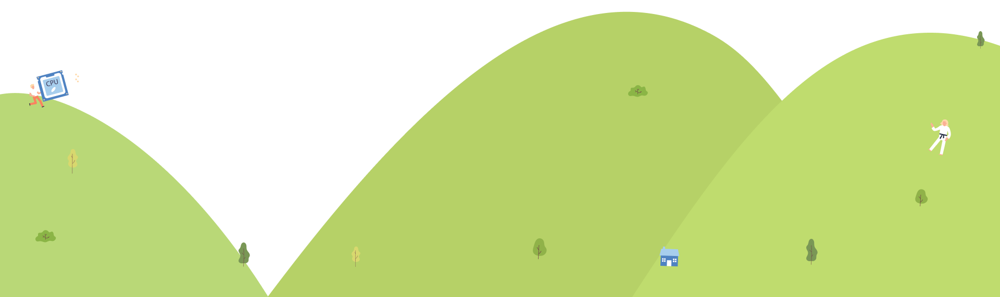

首頁
調查緣起
專輯文章
品牌溝通專區
調查&抽獎
得獎品牌
調查結果
歷年風雲賞
2016健康品牌調查
2017消費行為調查
2018職場健康
2019免疫力
2020全民養肺
2021血糖議題
2022疫情後生活模式
2023疫情後運動生活習慣
調查結果
《早安健康 x Yahoo奇摩》 發布第9年健康大調查 ：AI數位生活成常態 善用科技促進健康成趨勢
more
第九屆健康界奧斯卡典禮《2024健康品牌風雲賞》：行動裝置結合AI科技提升健康服務
more
工作、課業、心理健康...讓數位科技成為最佳工具！建構個人平衡數位生活
more
數位3C成日常，六成五的網友表示眼睛受不了
more
(即將發佈)
more
(即將發佈)
more
2024年健康品牌
風雲賞調查報告書
,
欲索取請聯繁主辦單位：service@h2u.ai
調查背景
調查方式
網路問卷調查
調查對象
台灣13歲以上網路使用者
調查時間
2024年5月9日至5月31日
有效問卷
18,047份
企劃單位
永悅健康、Yahoo!
樣本
有效問卷
18,047
份
居住縣市
性別
年齡
婚姻
職業
樣本概要說明
參與本調查並屬於有效樣本群的網友輪廓：
居住縣市
佔比前三居住城市為：
➊新北市(24%) ➋台北市(14%)➌台中市(12%)
性 別
59%為女性、41%為男性。
年 齡
佔比前三年齡層為：
➊55-67歲(23%) ➋45-49歲(18%) ➌50-54歲(18%)
婚 姻
36%為單身，61%為已婚；61%的人有小孩。
職 業
佔比前三職業為：
➊白領工作者(21%) ➋ 技術服務人員(14%) ➌ 公眾服務人員(12%)

1. 有在使用任何數位/穿戴式裝置（如智慧手錶、健康手環、手機應用程式APP等），來監測自己的健康、身體活動或生理指標比例
52%
的網友有在使用數位/穿戴式裝置
2. 使用數位/穿戴式裝置監測查看健康數據的頻率
73%
的網友每天至少查看一次自己的健康數據
3. 使用數位/穿戴式裝置監測/紀錄的健康數據
84%
的網友會使用數位裝置監測/紀錄
每日步行步數
4. 依賴使用數位健康監測工具的程度
6成
以上網友表示自己重度依賴數位健康監測工具。並有
38%
網友認為這些數位健康監測工具讓自己更了解身體狀態，提升生活品質。
5. 數位3C裝置與社群媒體對生活品質的影響
44歲以下偏向
正面影響
比例顯著較高。55歲以上認為沒有什麼影響的比例上升。
6. 數位3C裝置與社群媒體對人際關係的影響
18-44歲
的網友認為偏向負面的比例，高於其他年齡層。
7. 數位3C裝置與社群媒體對心理健康的影響
愈年輕
的族群，認為
偏向負面
的比例愈高。
8. 數位3C裝置與社群媒體帶來的影響
34歲以下
，偏向帶來
負面
影響較多。
如：無法控制時間、數位焦慮、工作學習被打斷、不滿現況、呈現最好的自己感到壓力。
55歲以上
，偏向生活
正面
影響較多。
維繫及拓展人脈社交、生活豐富、不孤單。
拓展生活體驗、吃美食、旅遊等
34%
時常一打開就停不下來，忘了時間
31%
比起外出，假日更喜歡待在家滑手機、瀏覽社群網站
21%
只要幾天沒有使用，就會覺得焦慮
20%
讓我多了許多歡樂、心情變好
20%
經常為了瀏覽訊息，工作、活動被打斷
19%
常常不小心就買了新東西，無法控制自己的購物欲
16%
更容易與他人維繫關係、經營人脈
13%
變得懶得與人面對面交談與互動
12%
更能表達自己，分享內心真實感受
9%
讓我覺得有人陪伴，不孤單
8%
經常覺得自己生活無趣、感到孤單
8%
讓我更有自信、對自己生活滿意
8%
認識更多人，拓展社交圈
8%
時常為了呈現最好的自己，感到壓力
6%
容易對目前的生活感到悲觀、不滿現況
6%
不想認識新朋友/建立新的人際關係
5%
建立更好的形象、讓我變得更受歡迎與受到關注
4%
使用後經常感到沮喪、不喜歡自己
3%
其他，請說明
0%
沒有影響
1%
9. 讓自己不要過度使用/沈迷3c裝置、社群媒體所採取的措施
8成2
的網友，會採取措施讓自己不要過度使用或沈迷3C裝置及社群媒體
10. 讓小孩不要過度使用/沈迷3c裝置、社群媒體所採取的措施
7成4的家長
會採取措施讓小孩不要過適度用或沈迷3C及社群媒體